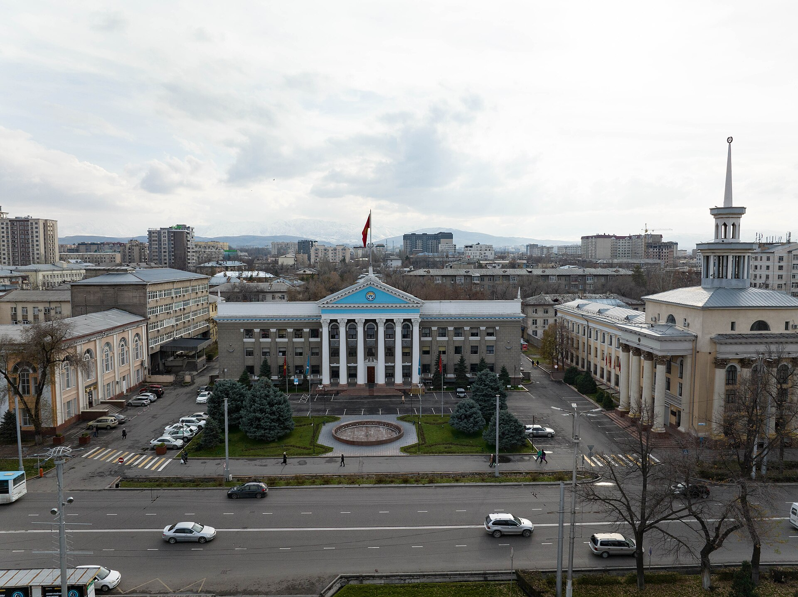

Саммит ШОС в Бишкеке: подписаны 28 документов, осуждены удары по Ирану
Саммит, посвящённый 25-летию Шанхайской организации сотрудничества, прошёл в Бишкеке 31 августа — 1 сентября. В итоговой декларации военные удары по территории Ирана оценены как нарушение международного права, председательство перешло к Пакистану.

31 августа и 1 сентября 2026 года в столице Кыргызстана Бишкеке прошло 26-е заседание Совета глав государств Шанхайской организации сотрудничества (ШОС). Заседание совпало с 25-летием создания организации и стало четвёртым случаем проведения саммита ШОС в Кыргызстане.
Саммит вёл президент Кыргызстана Садыр Жапаров. Встреча прошла под девизом «25 лет ШОС: вместе к устойчивому миру, развитию и процветанию».
Кто участвовал
Среди руководителей государств-членов приняли участие председатель КНР Си Цзиньпин, президент России Владимир Путин, премьер-министр Индии Нарендра Моди, президент Ирана Масуд Пезешкиан, президент Беларуси Александр Лукашенко и премьер-министр Пакистана Шехбаз Шариф. Также участвовали главы государств Узбекистана, Казахстана и Таджикистана.
Из государств со статусом партнёра были приглашены президент Турции Реджеп Тайип Эрдоган, президент Азербайджана Ильхам Алиев, премьер-министр Армении Никол Пашинян и президент Монголии Ухнаагийн Хурэлсух. Присутствовали также представители Египта, Лаоса, Того и Вьетнама. В саммите участвовал и генеральный секретарь ООН Антониу Гутерриш.
В цифрах
- Даты саммита: 31 августа — 1 сентября 2026 года
- Порядковый номер заседания: 26-е
- Подписанных документов: 28
- Возраст организации: 25 лет
- Кыргызстан как принимающая сторона: 4-й раз
- Следующий саммит: 2027 год, Исламабад
Бишкекская декларация
1 сентября главы государств подписали Бишкекскую декларацию по случаю 25-летия ШОС. Вместе с этим документом были приняты ещё 27 документов, охватывающих безопасность, борьбу с наркотиками, искусственный интеллект, биологическое разнообразие, энергетическое и климатическое сотрудничество, ядерную безопасность и региональную логистику.
В декларации были осуждены военные удары по территории Исламской Республики Иран. В тексте эти удары оценены как нарушение норм международного права. В документе выражены соболезнования в связи с гибелью высшего руководителя Ирана Али Хаменеи в результате воздушного удара в феврале 2026 года.
Военные удары по территории Исламской Республики Иран, приведшие к многочисленным жертвам среди мирного населения.
— Из текста Бишкекской декларации (перевод Al Jazeera, 01.09.2026)
В декларации отмечено, что право Ирана на ядерную программу в мирных целях в рамках Договора о нераспространении ядерного оружия должно признаваться без дискриминации. Вместе с тем государства-члены заявили, что выступают против односторонних санкций, противоречащих Уставу ООН и правилам Всемирной торговой организации.
«Не военно-политический блок»
В документе отдельно подчёркнуто, что ШОС не является военно-политическим блоком. Государства-члены заявили, что отвергают межблоковое противостояние в международных отношениях, и призвали решать конфликты дипломатическим путём.
В разделе о борьбе с терроризмом, сепаратизмом и экстремизмом отмечена необходимость подхода без «двойных стандартов». Премьер-министр Индии Нарендра Моди заявил, что двойные стандарты в борьбе с терроризмом должны быть устранены. В ходе саммита наблюдался обмен обвинениями между Индией и Пакистаном по вопросу терроризма.
В пункте по палестинскому вопросу подчёркнута необходимость всестороннего решения проблемы ради стабильности на Ближнем Востоке.
Экономическая часть
Государства-члены взяли на себя обязательство реализовать стратегии экономического и энергетического сотрудничества, рассчитанные до 2030 года. В документах поставлена задача стабилизации глобальных торговых потоков, нарушенных из-за региональных конфликтов и нестабильности на морских путях.
На полях саммита председатель КНР Си Цзиньпин и президент Кыргызстана Садыр Жапаров подписали договор «о вечном добрососедстве, дружбе и сотрудничестве».
Организационные решения
Пакистанский город Лахор определён Туристической и культурной столицей ШОС на 2026–2027 годы.
По итогам саммита Кыргызстан передал очередное председательство в организации Пакистану. Саммит 2027 года состоится в Исламабаде.
Контекст
Какая обстановка была перед саммитом
Бишкекский саммит прошёл на самом напряжённом геополитическом фоне 2026 года. В феврале США и Израиль начали масштабное воздушное наступление на территорию Ирана; в ходе тех ударов погиб высший руководитель Ирана Али Хаменеи. Весной и летом столкновения между Ираном и США продолжались. При этом российско-украинская война вошла в четвёртый год, а в Газе, хотя объявленное в октябре 2025 года соглашение о прекращении огня формально оставалось в силе, удары не прекратились.
Поэтому значительная часть повестки саммита была отведена вопросам безопасности. Часть декларации, посвящённая Ирану, стала одним из самых резких заявлений, принятых организацией за её историю в связи с нападениями на территорию государства-члена.
Что охватывают документы
Среди принятых 28 документов — соглашения в сфере безопасности, программа борьбы с оборотом наркотиков, документы о сотрудничестве в области искусственного интеллекта, а также соглашения по сохранению биологического разнообразия, энергетике и климату, ядерной безопасности и региональной логистике.
В экономическом блоке государства-члены взяли на себя обязательство практического внедрения стратегий экономического сотрудничества и энергетики, рассчитанных до 2030 года. В документах поставлена задача сокращения потерь, возникших из-за перебоев на глобальных торговых путях, в том числе из-за нестабильности на морских маршрутах.
Значение для Центральной Азии
Членами ШОС являются четыре государства Центральной Азии — Узбекистан, Казахстан, Кыргызстан и Таджикистан. Туркменистан в организацию не входит в силу статуса постоянного нейтралитета. Проведение саммита в одной из столиц региона позволило государствам Центральной Азии в течение одной недели провести двусторонние встречи с руководителями Китая, России, Индии и Ирана.
Президент Узбекистана Шавкат Мирзиёев предложил на саммите разработать концептуальный документ под названием «ШОС-2040: общее пространство развития», а также поднял вопрос практического запуска Банка развития ШОС. Ташкент сообщил о готовности принять в следующем году форум ШОС по искусственному интеллекту и новым цифровым решениям.
Вопрос Афганистана
На саммите был поднят вопрос восстановления диалога по Афганистану. Узбекская сторона заявила, что пришло время возобновить регулярный диалог между ШОС и Афганистаном. Для государств региона этот вопрос напрямую связан с безопасностью, транспортными путями и водными ресурсами.
Напряжённость между Индией и Пакистаном
В ходе саммита между делегациями Индии и Пакистана наблюдался открытый обмен обвинениями по вопросу терроризма. Нарендра Моди призвал устранить «двойные стандарты» в борьбе с терроризмом. В итоговой декларации сохранён пункт о недопустимости двойных стандартов в борьбе с терроризмом, сепаратизмом и экстремизмом.
Вместе с тем в Бишкеке была заснята сцена приветствия Нарендры Моди и Си Цзиньпина — международные СМИ отметили это отдельно как показатель состояния отношений двух государств после пограничных столкновений 2020 года.
Что изменилось, а что нет
По итогам саммита Кыргызстан передал председательство Пакистану; очередная встреча состоится в 2027 году в Исламабаде. Пакистанский город Лахор определён Туристической и культурной столицей ШОС на 2026–2027 годы.
Указание в декларации на то, что ШОС не является военно-политическим блоком, повторяет неизменную позицию организации за её 25-летнюю историю. Не изменилось и отношение государств-членов к односторонним санкциям: в тексте отвергаются ограничения, противоречащие Уставу ООН и правилам Всемирной торговой организации.